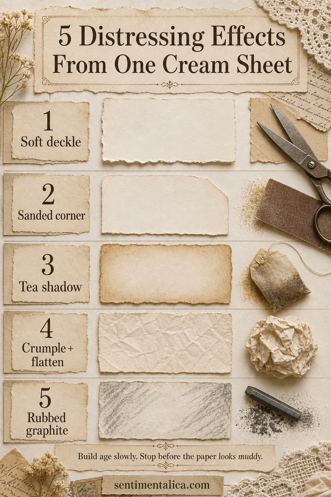

Paper looks convincingly aged when wear has a reason. Edges soften from handling, corners abrade, folds catch dirt, and shadows gather unevenly. Testing five effects on one cream sheet helps you see which kind of age supports the story of your page.

Soften the silhouette first
For a deckled edge, dampen a narrow tear line with a clean brush, wait a few seconds, and pull the paper slowly toward yourself. Feather only selected sections. To sand a corner, support the paper on a flat surface and use fine grit with two or three light passes.
Add shadow without soaking the sheet
Tea is easier to control with a sponge or nearly dry brush than by immersing the paper. Build color around edges, folds, and areas that would naturally be touched. Let every layer dry before adding another; wet paper always looks paler once it has dried.
Use pressure to create history
Crumple the sheet loosely, open it, and press it beneath a book. The softened creases catch later color beautifully. For a rubbed graphite effect, shade on scrap paper first, pick up the graphite with cloth, and brush it across raised texture. Direct pencil marks can look drawn rather than worn.
Stop while some cream remains untouched. Clean paper gives every distressed mark contrast, and contrast is what lets age look deliberate instead of muddy.
Visuals in this article were created with AI assistance and art-directed for Sentimentalica.
Browse more tactile paper techniques in the Sentimentalica journal archive.